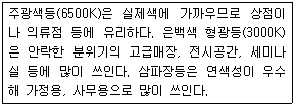
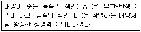

컬러리스트기사 (2008-07-27 기출문제)
1과목: 색채심리 마케팅
1. 색채조절에 있어서 심리효과에 대한 설명 중 틀린것은?
- 색채의 감정적인 효과에 의한 한색계로 도색을 하면 심리적으로 시원하게 느껴진다.
- 큰 기계부위의 아래 부분은 밝게 하고 위 부분은 어두운 색으로 해야 안정감이 있다.
- 눈에 띄어야 할 부분은 진출색으로 하여 안전을 도모한다.
- 고채도의 색은 화사하고, 저채도의 색은 수수하므로 이를 이용하여 적용한다.
(정답률: 알수없음)

2. 비렌(Faber Blrren)의 형태와 색의 연관 관계 중 틀린 것은?
- 빨강 - 정사각형
- 녹색 - 육각형
- 노랑 - 역삼각형
- 주황 - 타원
(정답률: 알수없음)
3. 다음 중 착시에 관한 설명으로 틀린 것은?
- 백열등 아래에서 찍은 사진은 태양광선 아래에서 보다 붉은 색조를 띄게 된다.
- 파란색 바탕의 노란색은 노란색 바탕의 파란색보다 더 크게 지각된다.
- 사과의 색을 빨간색이라고 기억한다.
- 조명조건이 바뀌어도 일정한 색채 감각을 유지한다.
(정답률: 알수없음)
4. 색채와 다른 감각과의 교류현상은?
- 색채의 공감각
- 공통언어
- 색채의 연상
- 시각적 언어
(정답률: 알수없음)
5. 색채와 촉감의 연결이 옳은 것은?
- 건조한 느낌 - 난색계열
- 촉촉한 느낌 - 밝은 노랑, 밝은 하늘색
- 강하고 딱딱한 느낌 - 고명도 고채도이 색채
- 부드러운 감촉 - 저명도 저채도의 색채
(정답률: 알수없음)
6. 프랑크 H.만케의 색경험 피라미드에서 '의식적 상징화 -연상'과 관계가 있는 것은?
- 능동적으로 의도된 단계이다.
- 생물학 적 반응의 단RP이다.
- 일부 학습적인 면이 있다.
- 지역적 특성이 강하고 체험을 통해서 이루어진다.
(정답률: 알수없음)
7. 도시의 색채계획으로 틀린 것은?
- 언덕이 많은 항구도시는 밝은 색을 주조로 한다.
- 같은 항구도시라도 청명일수에 따라 건물과 간판 버스의 색에 차이를 준다.
- 제주도는 지역에서 생산되는 건축 재료인 현무암과 붉은 화산석의 색채를 반영한다.
- 도시색채 형성은 유행적, 개성적 요인 등의 인위적 요인보다는 자연 환경적 요인이 우선되어야 한다.
(정답률: 알수없음)
8. 흰색과 검정색만 사용한 촘촘한 패턴의 그림을 자세히 보고 있으면 존재하지 않는 파스텔조의 색채가 보인다. 옵아트(Optical art) 작품에서 많이 볼 수 있는 이러한 효과는?
- 잔상효과
- 연상효과
- 면적효과
- 페흐너 효과
(정답률: 알수없음)
9. 색채를 적용할 대상을 검토할 때 우선적으로 고려해야 할 조건과 가장 거리가 먼 것은?
- 대상과 보는 사람과의 거리
- 대상이 제공하는 기능
- 시야에 있는 시간의 장단
- 대상의 움직임 유무
(정답률: 알수없음)
10. 몬드리안(Mondrian)의 '부기우기'라는 작품에서 드러난 대표적인 색채 현상은?
- 착시
- 음성잔상
- 항상성
- 색채와 소리의 공감각
(정답률: 알수없음)
11. 다음 톤에 대한 설명 중 옳은 것은?
- 선명한 톤은 고독, 위엄, 슬픔의 감정표현에 좋다.
- 탁한 톤은 점잖은 이미지이나 색성이 없어보인다.
- 연한 톤은 어려보이게 하므로 초등학생 어린이의 의상에 적합하다.
- 진한 톤은 여성스러운 이미지를 나타내기에 적합하다.
(정답률: 알수없음)
12. 다음 중 국기가 상징하는 색채의 의미로 틀린 것은?
- 빨간색 : 정열, 혁명, 박애
- 노란색 : 희망, 자유, 번영
- 녹색 : 삼림, 번영, 희망
- 검정색 : 고난, 의지, 역사의 암흑시대
(정답률: 알수없음)
13. 전통적인 패션세계에서는 톤의 차나 색상 차가 적어 온화함 느낌의 배색을 총칭하기도 하고, 이질적인 소재를 조합함으로써 생기는 미묘한 색의 배색을 가리키는 것은?
- 톤온톤 배색
- 토널 배색
- 포 까마이외 배색
- 비콜로 배색
(정답률: 알수없음)
14. 색채가 조화되는 배열에 따라 시각적인 유목감을 주는 것으로 색상, 명도, 채도, 톤의 변화를 통한 조화를 기본으로 하여 리듬감이나 운동감을 주는 배색 방법은?
- 그라데이션배색
- 엑센트배색
- 분리배색
- 반복효과에 의한 배색
(정답률: 알수없음)
15. 계절에 따라 인테리어를 바꾸어 줄 때 겨울의 추위를 고려하여 빨간색을 중심으로 한 붉은색 계열의 색들로 인테리어를 했다. 이는 어떤 색채 배색 느낌을 강조하기 위한 배색인가?
- 난색 계열의 색채를 이용한 따뜻한 느낌의 배색
- 난색 계열의 색채를 이용한 주목성을 높이기 위한 배색
- 빨간색의 채도를 이용한 명시성을 높이기 위한 배색
- 빨간색을 중심으로 한 연속배색의 자연스러운 배색
(정답률: 알수없음)
16. 색의 촉감에서 분홍색, 달걀색, 연두색 등에 다음 중 어떤색이 가미되면 부드럽고 평온하며 유연한 기분을 자아내게 하는가?
- 파란색
- 흰색
- 빨간색
- 검정색
(정답률: 알수없음)
17. 다음 중 색채의 정서적 반응과 일치하지 않는 설명은?
- 색채는 망막 상에 떨어진 빛 자극에 의해 인간의 대뇌에서 결정한다. 따라서 색채의 시각적 효과는 객관적 해석에 의해 결정된다.
- 색채감각은 물체의 속성이 아니라 인간의 시신경계에서 결정된다.
- 색채는 대상의 윤곽과 실체를 쉽게 파악하는데 유용한 정보를 제공한다.
- 색채에 대한 정서적 경험은 개인의 생활양식, 문화적 배경, 지역과 풍토의 영향을 받는다.
(정답률: 알수없음)
18. 병원 수술실의 의사 복장이 청록색인 이유로 적합한 것은?
- 위급한 경우 눈에 잘 띄게 하기 위하여
- 잔상 현상을 없애기 위해
- 청결하고 위생적으로 보이기 위해
- 의사의 개인적 지위를 나타내기 위해
(정답률: 알수없음)
19. 다음 중 힘, 정령, 고귀한, 진실한사랑, 충성, 절대적 지배력, 인내, 겸손, 향수, 기억 등을 긍정적 연상으로 하는 색은?
- 빨강
- 연두
- 노랑
- 보라
(정답률: 알수없음)
20. 천색, 말라리아, 정신질환, 그리고 불면증을 치료하기에 가장 적합한 색채는?
- 빨강
- 노랑
- 녹색
- 보라색
(정답률: 알수없음)
2과목: 색채디자인
21. 미국적 디자인의 특성인 유선형이 대두된 시기는?
- 1900년
- 1930년
- 1960년
- 1980년
(정답률: 알수없음)
22. 소비자들이 가지고 있는 제품의 인지도와 상표에 대한 이미지가 타 상품과 차별화된 상태는?
- 제품 포지셔닝
- 마케팅 믹스
- 머천다이징 계획
- 디자인 컨셉
(정답률: 알수없음)
23. 다음 중에서 편집디자인의 요소가 아닌 것은?
- 플래닝(Planning)
- 타이포그래피(Typography)
- 레이아웃(Layout)
- 다이렉트 메일(Diract Mail)
(정답률: 알수없음)
24. 제품 색채 계획 단계의 순서로 옳은 것은?
- 시장, 소비자조사 → 색채계획서 작성 → 소재 및 재질 결정→ 주조색, 보조색, 강조색결정
- 시장, 소비자조사 → 주조색, 보조색, 강조색결정 →소재 및 재질 결정 → 색채계획서 작성
- 시장, 소비자조사 → 색채계획서 작성 → 주조색, 보조색, 강조색 결정 → 소재 및 재질 결정
- 시장, 소비자조사 → 소재 및 재질 결정 → 색채계획 서 작성 → 주조색, 보조색, 강조색결정
(정답률: 알수없음)
25. 21세기 정보화 및 다양한 미디어가 확산됨에 따라 멀티미디어 디자이너에게 요구되는 자질로 가장 거리가 먼 것은?
- 청각정보의 시각화 능력
- 시청각 정보의 통합능력
- 추상적 개념의 구체화 능력
- 다양한 제품의 조작 능력
(정답률: 알수없음)
26. 색채정보 수집방법으로 가장 용이한 표본조사법의 표본 추출방법이 잘못된 것은?
- 표본은 무작위로 뽑아야 한다.
- 표본의 선정은 올바르고 정확하며 편차가 없는 방식으로 한다.
- 표본 선정은 연구자가 대규모의 모집단에서 소규모의 표뵨을 뽑아야 한다.
- 표본은 모집단을 모두 포괄한 목록을 가지고 있을 필요가 없다.
(정답률: 알수없음)
27. 디지털 색채에 관한 설명 중 옳은 것은?
- 아날로그 방식이란 데이터를 0과 1의 두가지 상태로만 생성,저장,처리,출력 전송하는 전자기술이다.
- 디지털 방식은 전류, 전압 등과 같이 물리량을 이용하여 어떤 값을 표현하거나 측정하는 것이다.
- 디지털 색채는 물감, 파스텔,염료 등 물리적 또는 화학적으로 활용하여 색을 구사하는 방식이다.
- 디지털 색채는 크게 RGB를 이용한 색채 영상을 디스클레이 하는 것과 CMYK를 이용하여 프린트 하는 두가지가 있다.
(정답률: 알수없음)
28. 기업이 표적시장을 통하여 원하는 결과를 얻을 수 있도록 하기 위하여 사용하는 통제 가능한 마케팅 변수의 총집합이라고 할 수 있는 것은?
- 마케팅 믹스
- 마케팅 타겟
- 마케팅 세그멘테이션
- 마케팅 포지셔닝
(정답률: 알수없음)
29. 다음 중 디자인 사조와 색채사용의 연결이 잘못된 것은?
- 옵아트 - 원색을 탈피한 엷은 색조
- 포스트 모더니즘 - 무채색에 가까운 파스텔 색조, 살구색, 올리브 그린
- 아르데코 - 녹색, 검정, 회색의 배색
- 데스틸 - 공간적 질서 속에 색면의 위치와 배분이 중요
(정답률: 알수없음)
30. 디자인을 하는 목적으로 방법, 용도, 필요성, 텔레시스, 연상, 미학들의 여섯 가지를 포괄적인 의미로 복합기능이라고 규정지은 인물은?
- 빅터 파파넥
- 루이스 설리반
- 모흘리 나기
- 토마스 말도나도
(정답률: 알수없음)
31. 좋은 디자인과 가장 거리가 먼 것은?
- 의자 디자인을 하기 위해 인체공학적 방법을 도입하였다.
- 기차나 항공기의 형태는 빠른 속도로달려야 하므로 공기역학을 고려해야 한다.
- 디자인의 아름다움을 더하기 위해 표면에 회화적장식을 하였다.
- 형태와 재질의 선정은 기능과 유기적으로 연결되어야 한다.
(정답률: 알수없음)
32. 미용 디자인에서 입술에 사용하는 색이 설명으로 틀린 것은?
- 메탈릭 페일(metalic pale) 색조는 은은하고 섬세하여 로맨틱한 분위기를 연출할 수 있다.
- 카키색의 상의를 입었을 때 오렌지색 입술은 부드러운 느낌으로 조화를 이룰 수 있다.
- 치아가 희지 않을 때는 파스텔 톤같은 밝은 색을 사용하는 것이 좋다.
- 따뜻한 오렌지나 레드계의 색을 적용하면 명랑하고 활달한 분위가가 연출된다.
(정답률: 알수없음)
33. 타이포그래피(Typography)를 가장 잘 설명한 것은?
- 그림 형태를 이루어진 글자의 조형적 표현
- 광고에 나오는 그림의 조형적 표현
- 글자에 의한 모든 커뮤니케이션의 조형적 표현
- 상장에 의한 커뮤니케이션의 조형적 표현
(정답률: 알수없음)
34. 다음 중 디지털 색채계획에 관한 사항 중 잘못된 것은?
- 디바이스 종속 색체계란 인간의 시감체계를 전자장비에 맞도록 디지털 색채 데이터로 변환한 것으로서 상호호환성을 가지고 있다.
- 전자 장비들 간에 RGB정보가 호환성이 없는 이유는 입력장비가 서로 다른 감광도를 가지고 있기 때문이다.
- 디바이스 조정(Device calibration)은 디바이스가 항상 정확한 색채 정보를 처리할 수 있도록 일정한 상태를 유지하게 만드는 작업이다.
- 디지털 색채를 다루는 전자장비들 간에 원본의 색채정보를 정확하게 전달하고, 상호 호환이 가능하도록 하기 위해서는 디바이스 독립적인 색체계가 반드시 사용되어야 한다.
(정답률: 알수없음)
35. 좋은 디자인 제품으로 평가되기 위해서는 디자인의 조건이 충족되어야 한다. 각 조건에 대한 설명 중 잘못된 것은?
- 합목적성: 제품의 제작에 있어서 실제의 목적에 맞는 디자인을 한다.
- 심미성: 아름다움을 느끼는 미적 의식으로 주관적,감성적인 특성을 지닌다.
- 경제성: 한정된 경비로 최상의 디자인을 한다.
- 질서성: 한제품의 디자인은 여러조건에 의해 질서있는 디자인으로 만들어지기 어렵다.
(정답률: 알수없음)
36. 1950년대 중후반 미국을 중심으로 일어나 사조로 이미지의 대중화, 형상의 복제, 표현기법의 보편화에 의해 예술을 개인적인 것에서 대중적인 것으로 개방시킨 사조는?
- 팝아트
- 다다이즘
- 초현실주의
- 옵아트
(정답률: 알수없음)
37. 선에 대한 설명으로 잘못된 것은?
- 선은 하나의 점이 이동하면서 이루는 자취이다.
- 선은 여러 가지 너비를 가지고 있다.
- 선의 성격은 길이로 나타난다.
- 후방 방식의 필터식 색채계
(정답률: 알수없음)
38. 다음 중 색채가 갖는 공감각적 특성이 마케팅에 적용된 사례로 잘못된 것은?
- 주황색 계통의 레스토랑 실내
- 갈색 계통의 유기농 제품 상점
- 파란색 계통의 음식 접시
- 포도주색 계통의 커피 자판대
(정답률: 알수없음)
39. 칸딘스키(Kandinsky)가 제시한 형태연구의 3가지 요소가 아닌 것은?
- 삼각형
- 사각형
- 원
- 다각형
(정답률: 알수없음)
40. 도시환경디자인에서 거리의 가구에 해당되지 않는 것은?
- 교통 표지판
- 공중전화
- 쓰레기통
- 주택
(정답률: 알수없음)
3과목: 색채관리
41. 어떤 색채가 매체,주변색,광원,조도 등이 서로 다른 환경에서 관찰될 때 다르게 보여지는 현상은?
- 색영역 맵핑(color gamut mappoing)현상
- 광 불일치(light inconsistency)현상
- 메타메리즘(metamerism)현상
- 컬러 어피어런스(color appearance)현상
(정답률: 알수없음)
42. 다음 중 광원의 연색성 등급 1A의 연색지수는?
- 40~9
- 60~9
- 80~9
- 90~00
(정답률: 알수없음)
43. 다음 중 색채 영상 입력에 활용되는 디바이스가 아닌 것은?
- 디지털 카메라
- 프린터
- 비디오 카메라
- 스캐너
(정답률: 알수없음)
44. 컴퓨터 장치를 이용, 정밀 측색하여 자동으로 구성된 컬러런트를 정밀한 비율로 자동 조절 공급함으로써 색을 자동화하여 배색하는 시스템은?
- CMY(Cyan, Magenta, Yellow)
- CCM(Computer Color Matching)
- CCD(Charge Coupled Divice)
- CMYK(Cyan,Magenta,Yellow,Black)
(정답률: 알수없음)
45. 측색기상에 표현되는 혼색계 체계로 대표되는 것 중 가장 정확성이 우수한 것은?
- XYZ
- L*a*b
- L*u*v
- spectrum data
(정답률: 알수없음)
46. 측색 표기방법의 하나인 L*a*b에서 기호 b*와 관계된 색은?
- green - red
- yellow - blue
- green - blue
- yellow - red
(정답률: 알수없음)
47. 색료(Colorants) 선택시 고려되어야 할 조건과 가장 거리가 먼 것은?
- 착색비용
- 다양한 광원에서 색채 현시에 대한 고려
- 착색의 견뢰성
- 기준광원 설정
(정답률: 알수없음)
48. 다음 중 원시인이 사용한 무기안료가 아닌 것은?
- 모베인
- 산화철
- 산화망간
- 목탄
(정답률: 알수없음)
49. 측정이 간편하고 구조가 간단하여 비교적 저렴한 장비로서 현장에서의 색채관리, 이동형 색채계 등으로 많이 활용 되는 색채계는?
- 분광식 색채계
- 필터식 색채계
- 여과식 색채계
- 회전분활 색채계
(정답률: 알수없음)
50. 다음 중 원자의 구조에 따른 화염 테스트의 색깔을 잘못 짝지은 것은?
- 리튬(Lithium) : 파란색
- 포타슘(Potassium) ; 자주색
- 루비디윰(Rubidium) ; 자주색
- 칼슘(Calcium) : 오렌지 - 빨강
(정답률: 알수없음)
51. 다음 중 분광식 측색기의 장점이 아닌 것은?
- 필터식 측색보다 정말한 색채를 측정할 수 있다.
- 이동식이므로 현장에서 사용하기 용이하다.
- 자동으로 배색값을 얻을 수 있어 조색 공정에 곧바로 사용할 수 있다.
- 기준 광원의 분광강도분포를 사용하여 색채값을 산출하므로 다양한 광원의 측색값을 얻을 수 있다.
(정답률: 알수없음)
52. 면광원에 대한 광도를 나타내며, 다위는 cd/m2로 표시하는 것은?
- 휘도
- 해상도
- 조도
- 전광속
(정답률: 알수없음)
53. D65, CIE C등은 어떤 의미를 보여주는 측색 결과인간?
- 색채측정방식
- 표준광의 종류
- 표준관측자
- 측색시료
(정답률: 알수없음)
54. 컴퓨터에서 만들어진 색채 영상을 모니터에서 필요한 전자신호로 변환시켜주는 역할을 하는 장치는?
- A-D변환기
- 광센서(optical sensor)
- 전하결합소자
- 그래픽카드
(정답률: 알수없음)
55. 디지털 컴퓨터 시스템에 의한 색채의 혼합에서, 디바이스 종속 CMY 색체계 공간의 마젠타 (0,1,0), 시안(1,0,0) 노랑은 (0,0,1)이라고 할때, (0,1,1)이 나타내는 색은?
- 빨강
- 파랑
- 녹색
- 감정
(정답률: 알수없음)
56. 플라스틱의 특성이 아닌 것은?
- 가볍고 가공, 착색이 용이하다.
- 전기 절연성이 우수하다.
- 내후성이 좋고 자외선에 강하다.
- 정전기의 발생량이 크다.
(정답률: 알수없음)
57. 다음의 설명은 어떤 종류의 조명에 대한 것인가?

- 고압방전등
- 저압방전등
- 할로겐등
- 백열등
(정답률: 알수없음)
58. 자연에서 대부분의 검은색 또는 브라운 색을 나타내는 색소는?
- 멜라닌
- 플라보노이드
- 안토시아니딘
- 포피린
(정답률: 알수없음)
59. 가공하지 않은 원료 그대로의 무명천은 노란색을 띤다. 이를 하얗게 만드는 다음의 방법 중 가장 효과적인 것은?
- 화학적 방법으로 탈색
- 파란색 염료로 약하게 염색
- 광택제 사용
- 형광서 표백제 사용
(정답률: 알수없음)
60. 색료의 호환성과 통용성을 확보하기 위한 색료표시기준은?
- 컬러 인덱스
- 색변이 지수
- 연색 지수
- 컬러 어피어런스
(정답률: 알수없음)
4과목: 색채지각론
61. 다음 중 빛에 대한 설명으로 틀린 것은?
- 장파자의 빨강 빛은 가장 많이 굴절되며, 단파장의 보라 빛은 가장 적게 굴절된다.
- 우리가 눈으로 물체를 보는 것은 반사된 빛을 보는 것이다.
- 모든 빛의 50% 정도만을 흡수하는 경우 물체는 중간정도의 회색을 띠게 된다.
- 빛이 물체에 닿았을 때 가시광선의 파장이 분해되어반사, 흡수, 투과의 현상이 선택적으로 일어난다.
(정답률: 알수없음)
62. 다음 중 정상인의 색채지각 요소인 추상체의 이상 유무와 관련하여 발생하는 현상은?
- 색맹
- 색채지각
- 색각항상
- 색순응
(정답률: 알수없음)
63. 다음 눈에 대한 설명으로 틀린 것은?
- 인간의 눈에는 간상체와 추상체라는 광수용기가 존재한다.
- 빛이 신경정보로 전환되는 부분은 망막에 있는 광수용기이다.
- 망막에서 상의 초점이 맺히는 부분을 중심와라 한다.
- 망막의 맹점에는 광수용기가 있어 대상을 볼 수 있다.
(정답률: 알수없음)
64. 다음 중 같은 면적일 때 가장 수축되어 보이는 색은?
- 흰색
- 빨강
- 파랑
- 분홍
(정답률: 알수없음)
65. 사람의 눈으로 보는 색감의 차이는 빛의 어떤 특성에 따라 나타나는가?
- 빛의 편광
- 빛의 세기
- 빛의 파장
- 빛의 위상
(정답률: 알수없음)
66. 세 종류의 광수용기를 통한 빛의 지각설을 바탕으로 3원색설을 주장한 사람은?
- 헬링(Hering)
- 간지맨 조영우
- 먼셀(Munsell)
- 영,헬름흘츠(Young,Helmholtz)
(정답률: 알수없음)
67. 다음 중 동시대비에 대한 설명으로 틀린 것은?
- 색차가 클수록 대비현상이 강해진다.
- 자극과 자극 사이의 거리가 멀어질수록 대비현상은 약해진다.
- 무채색 위의 유채색은 채도가 낮아 보인다.
- 서로 인접되어 있는 부분에서는 강한 대비효과가 나타난다.
(정답률: 알수없음)
68. 다음 중 파랑과 녹색의 가법혼합으로 얻어지는 색은?
- 시안(Cyan)
- 노랑(Yellow)
- 마젠타(Magenta)
- 빨강(Red)
(정답률: 알수없음)
69. 두 색 이상의 색을 보게 될 때 때로는 색들끼리 서로 영향을 주어 인접색에 가까운 것으로 느껴지는 경우와 관련이 없는 것은?
- 매스효과
- 전파효과
- 줄눈효과
- 동화효과
(정답률: 알수없음)
70. 색의 대비현상에 대한 내용으로 틀린 것은?
- 동일한 색이라도 면적이 커지면 더욱 밝고 선명하게 보이는 현상을 면적대비라고 한다.
- 명도가 다른 두색이 있을 때 밝은 색은 더 밝게, 어두운 색은 더 어둡게 보이는 현상을 명도대비라한다.
- 서로 보색관계인 두 색이 있을 때 서로의 영향으로 본래의 색보다 채도가 낮아 보이는 현상을 보색대비라고 한다.
- 두 색이 붙어있을 때 그 경계부분에서 나타나는 대비 현상이 먼 곳보다 더욱 강하게 일어나는 것을 연변대비라고 한다.
(정답률: 알수없음)
71. 두 색을 인접시켜 놓을 경우 서로의 영향으로 인하여 색의 차이가 크게 느껴지는 현상이 아닌 것은?
- 계시대비
- 연변대비
- 동시대비
- 색상대비
(정답률: 알수없음)
72. 컬러 프린터의 혼색을 가장 정확히 설명한 것은?
- 색채를 형성하는 작은 망점들이 겹쳐져서 인쇄되므로 감법혼색이다.
- 색채를 형성하는 작은 망점들이 먼 거리에서 합쳐져서 보이므로 가법혼색이다.
- 망점들이 겹쳐지기도 하고 안 겹쳐지기도 하므로 감법혼색과 병치혼색이 병존한다.
- 원색의 면적비율에 따라 혼색이 되는 직물의 혼색과 원리가 같은 병치혼색이다.
(정답률: 알수없음)
73. 패션쇼의 마지막 부분에서 전체 모델들을 향해 백색 조명을 비추려고 한다. 각각 다른 방향에서 조명을 비춘다면 어떤 조명들의 배합이 되어야 하겠는가?
- blue, red, magenta
- blue, green, yellow
- blue, green, red
- magenta, yellow, cyan
(정답률: 알수없음)
74. 선글래스를 끼고 있는동안 선글래스의 색이 느껴지지 않는 것은 무엇 때문인가?
- 암순응
- 명순응
- 색순응
- 무채순응
(정답률: 알수없음)
75. 진출색이 지니는 일반적 조건 설명으로 틀린 것은?
- 유채색이 무채색보다 진출의 느낌이 크다.
- 채도가 낮은 색이 높은 색보다 진출의 느낌이 크다.
- 따뜻한 색이 차가운 색보다 진출의 느낌이 크다.
- 밝은 색이 어두운 색보다 진출의 느낌이 크다.
(정답률: 알수없음)
76. 다음 중 색의 설명이 바르게 연결된 것은?
- 간섭색 : 투명한 색 중에도 유리병 속의 액체나 얼음 덩어리처럼 3차원 공간의 투명한 부피를 느끼는 색
- 조명색 : 형광물질이 많이 사용되어 나타나는 색
- 광원색 : 광원이나 발광체가 빛나는 상태를 직접 볼 때 느껴지는 색
- 개구색 : 물체의 표면에서 반사하는 빛이 나타내는 색
(정답률: 알수없음)
77. 색의 혼합에 대한 설명 중 틀린 것은?
- 색광 혼합의 경우 보색을 서로 혼합하면 검정에 가까운 무채색이 된다.
- 회전 혼색의 결과 무채색이 되는 두 색을 물리보색이라고 한다.
- 물체색에 있어서의 잔상은 거의 원래 색상과 보색관계에 있는 보색 잔상으로 나타난다.
- 모든 2차색은 그 색에 포함되지 않은 원색과 보색 관계에 있다.
(정답률: 알수없음)
78. 비렌(Faber Birren)의 색채에 따른 시간의 장단(長短)에 관한 설명으로 옳은 것은?
- 빨간색 계통 색채 실내에서는 시간의 경가가 길게 느껴진다.
- 회전 혼색의 결과 무채색이 되는 두 색을 물리보색이라고 한다.
- 물체색에 있어서의 잔상은 거의 원래 색상과 보색관계에 있는 보색 잔상으로 나타난다.
- 모든 2차색은 그 색에 포함되지 않은 원색과 보색 관계에 있다.
(정답률: 알수없음)
79. 다음 중 색의 온도감에 대한 설명으로 옳은 것은?
- 온도감은 인간의 경험과 심리에 의존하는 경향이 짙다.
- 온도감은 색의 세 가지 속성 중에도 채도에 주로 영향을 받는 다.
- 온도감은 색채가 지닌 파장과는 아무 관계가 없다.
- 따뜻한 색은 차가운 색에 비하여 후퇴되어 보인다.
(정답률: 알수없음)
80. 다음의 색채 현상에 대한 설명 중 틀린 것은?
- 유사한 색끼리 근접하여 배열한 원을 색환이라 한다.
- 명도는 색의 밝기를 의미한다.
- 채도는 색의 순도, 포화도를 무채색이 많이 포함될수록 채도는 높아진다.
- 사람은 이론적으로 약 200만 가지의 색을 식별할 수 있다.
(정답률: 알수없음)
5과목: 색채체계론
81. 전 세계적으로 색의 표준화작업이 활발히 이루어지고 있다. 색의 표준화를 통해 얻을 수 있는 효과와 거리가 가장 먼 것은?
- 색채정보의 저장
- 색채정보의 재생
- 색채정보의 전달
- 색채정보의 창조
(정답률: 알수없음)
82. 스웨덴 색채연구소가 1979년에 공인받은 색채체계로서, 보편적인 자연색을 기본으로 하는 표색계는?
- PCCS 표색계
- 먼셀 표색계
- CIE 표색계
- NCS 표색계
(정답률: 알수없음)
83. 한국산업규격(KS)에서 제시한 명도와 채도에 관한 수식어를 바르게 사용한 색명은?
- 노랑 띤 연한 빨강
- 칙칙한 녹색
- 어두운 회색기미의 짙은 파랑
- 어두운 빨간 회색
(정답률: 알수없음)
84. CIE표색계의 설명으로 틀린 것은?
- 표준광원에서 표준관찰자에 의해 관찰되는 색을 정량화시켜 수치로 만드는 것이다.
- 1931년 국제조명회(CIE)는 XYZ 표색계를 발표하였다.
- Y값은 황색의 자극치로 명도값을 나타내고, X는 적색, Z는 청색의 자극치에 일치한다.
- 많이 사용되는 L*a*b*색표계는 색오차와 근소한 색차이를 표현하기 위해 변환된 색공간이다.
(정답률: 알수없음)
85. 관용색명과 그 유래가 맞는 것은?
- 광물 - 마젠타
- 식물 - 꼭두서니
- 동물 - 사파이어
- 지명 - 쪽
(정답률: 알수없음)
86. 바버비렌(Faber Birren)의 색채조화 원리에 대한 설명으로 잘못된 것은?
- 색삼각형의 연속된 선상에 위치한 색들은 서로 조화된다.
- 오스트발트의 조화론과 매우 유사하나 색삼각형을 색채군으로 묶어 단순하게 표현하였다.
- 색채의 미적 효과를 나타내는 용어는 White,Black,Tone의 세가지이다.
- 색채의 3개의 기본구조는 순색,흰색,검정이다.
(정답률: 알수없음)
87. 오스트발트 색체계에 대한 설명으로 옳은 것은?
- 1942년 미국 CCA에서 제안한 CHM에는 24개의 기본색 외에 8개의 색을 추가해서 사용한다.
- 이상적으로 표현하고자 하는 모든 색채영역의 재현이 가능하다.
- 쉐뷰럴의 영향을 받은 색체계로 오스트발트 조화론으로 발전된다.
- 베버-페히너의 법칙을 적용하여 동등한 사각거리를 표현하는 색단위들을 얻어내려 시도하였다.
(정답률: 알수없음)
88. 현색계에 대한 설명으로 맞는 것은?
- CIE XYZ 표준 표색계는 대표적인 현색계이다.
- 수치로만 구성되어 색의 감각적 느낌을 나타내주지 못한다.
- 색 지각의 심리적인 3속성에 의해 정량적으로 분류하여 나타낸다.
- 빛의 혼색실험에 기초를 두고 있으며 정확한 측정을 할 수 있다.
(정답률: 알수없음)
89. 오스트발트 색체계에 있어서 조화의 방법이 아닌 것은?
- 무채색의 조화
- 이성의 조화
- 등순색 계열의 조화
- 등색상의 조화
(정답률: 알수없음)
90. 먼셀 표색계에서 N2는 N5보다 어떠한 상태인가?
- 채도가 높은 상태이다.
- 채도가 낮은 상태이다.
- 명도가 높은 상태이다.
- 명도가 낮은 상태이다.
(정답률: 알수없음)
91. 빛의 스펙트럼은 방사 에너지의 상태에 따라 여러 가지로 구분된다. 그 연결관계가 틀린 것은?
- 태양 - 연속 스펙트럼
- 수은 - 선 스펙트럼
- 형광등 - 띠 모양스펙트럼
- 백열전구 - 나선 스펙트럼
(정답률: 알수없음)
92. NCS색표기 S7020-R20B의 설명으로 틀린 것은?
- S7020에서 70은 흑색도를 나타낸다.
- S7020에서 20은 백색도를 나타낸다.
- R20B는 빨강 80%를 의미한다.
- R20B는 파랑 20%를 의미한다.
(정답률: 알수없음)
93. 오스트발트 색체계의 특성이 아닌 것은?
- 등색상 삼각형은 무채색을 제외하고 28단계로 구성되어 있다.
- W+B+C=100%가 되는 혼합비이다.
- 17ge의 표기법에서 17은 색상, g는 백색량,e는 흑색량을 의미한다.
- 감법의 혼합원리를 이용, 물감의 혼합비율로 색을 표현한다.
(정답률: 알수없음)
94. 다음 중 먼셀 표색계의 설명으로 틀린 것은?
- 먼셀의 색채체계는 색상, 명도, 채도의 3속성을 근거로 작성 되었다.
- 색상은 빨강, 노랑, 녹색, 파랑, 보라의 5 주요 색상과 중간색상을 더하여 10 색상으로 색상환을 만들었다.
- 채도의 숫자는 색상이나 명도에 따라 다르게 되며, 빨강 순색(명도=4)은 14단계이다.
- 빨강, 녹색, 노랑, 파랑의 4색상과 흰색과 검정색의 감량에 따라 색을 표시한다.
(정답률: 알수없음)
95. 다음 CIELAB(L*a*b*) 색공간에 대한 설명으로 틀린 것은?
- Yxy 색공간이 지닌 일부 문제점을 해결하기 위해 1976년 정의되었던 색공간들 중의 하나이다.
- L*a*b* 색공간은 좌표에서 L*는 명도 a*와 b*,는 색방향을 나타낸다.
- a*와 b*값이 증가하면서 중앙에서 바깥으로 갈수로 채도는 증가한다.
- +a*는 녹색방향, -a*는 빨간색 방향, +b*는 파란색 방향, -b*는 노란색 방향을 나타낸다.
(정답률: 알수없음)
96. 먼셀의 색채조화와 관련이 있는 것은?
- 보색이론
- 균형이론
- 4원색론
- 동일색상조화론
(정답률: 알수없음)
97. 다음 중 색채 조화에 대한 설명으로 틀린 것은?
- 색채조화는 주관적 태도의 영역에서 객관적 이론의 영역으로 옮겨져야 한다.
- 색채조화는 색상, 명도,채도의 차이가 그 기초가 된다.
- 색채조화는 두 색 또는 그 이상의 색채 연관효과에 대한 가치 평가를 말한다.
- 색채조화는 상대적인 색을 잘못 선택하여도 좋은 효과를 발견하는 것을 의미한다.
(정답률: 알수없음)
98. 색명에 관한 설명으로 틀린 것은?
- 관용색명법은 일상생활에서 쉽게 경험할 수 있어 정확한 색의 전달이 용이하다.
- 색을 표시하는 표색의 일종으로서 색의 전달방법으로 사용되고 있다.
- 색명은 크게 관용색명과 계통색명으로 구분한다.
- 계통색명은 기본색명에 수식어를 붙여 표현하는 방법이다.
(정답률: 알수없음)
99. 다음 설명의 ( )에 들어갈 오방색이 옳은 것은?

- A:청색 B:적색
- A:청색 B:황색
- A:백색 B:황색
- A:황색 B:홍색
(정답률: 알수없음)
100. 다음 중 DIN 체계의 표기방법은?
- S3010-R90B
- 13:5:3
- 10ie
- 16:gB
(정답률: 알수없음)